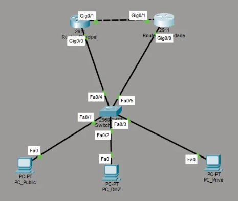
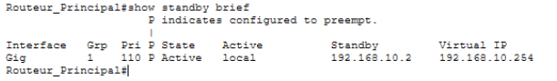
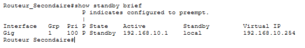
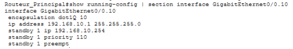
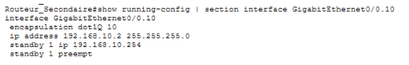
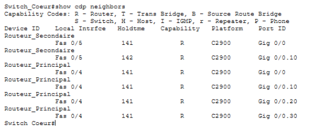
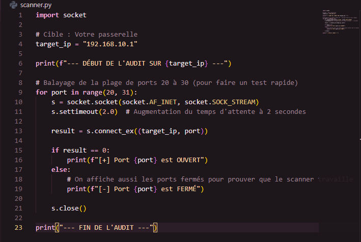

Compte-rendu : Haute Disponibilité (HSRP)
1. Architecture et Topologie
L'infrastructure repose sur deux routeurs Cisco ISR 2911 configurés en redondance et un switch Catalyst 2960. L'objectif est d'assurer un basculement transparent pour les utilisateurs finaux.

Topologie réseau : Architecture HSRP Active/Standby.2. Configuration Technique
Vérification de l'adressage (Interface Brief)
Cette étape permet de valider que les interfaces physiques et logiques sont correctement configurées et actives (UP/UP) sur les deux routeurs.


À gauche : Routeur Principal | À droite : Routeur Secondaire.Configuration HSRP (Running-config)
La configuration ci-dessous illustre la mise en place du protocole HSRP sur l'interface GigabitEthernet0/0.10. On y observe la définition de l'IP virtuelle, la gestion des priorités (110 vs 100) et l'activation de la préemption.


À gauche : Config. Routeur Principal | À droite : Config. Routeur Secondaire.Résolution d'incident (Troubleshooting)
Lors de la phase de test, un conflit "Split-Brain" est apparu. L'analyse des ports via show cdp neighbors a révélé que les liaisons entre les routeurs et le switch étaient en mode "Access". Le passage des interfaces du switch en mode Trunk a résolu la problématique en autorisant les paquets HSRP.

Analyse du voisinage via la commande 'show cdp neighbors' sur le switch pour identifier la configuration des ports.3. Automatisation et Validation
Scripting d'automatisation
Afin de fiabiliser les tests de connectivité, j'ai développé un script Python. Il automatise la vérification de la disponibilité du réseau et la validation des changements d'état lors du basculement (Failover).

Extraction du script d'automatisation des tests.Test de basculement (Failover)
La validation finale consistait à vérifier l'état du protocole sur les deux équipements. Le routeur principal est bien en état Active, tandis que le secondaire est en Standby.